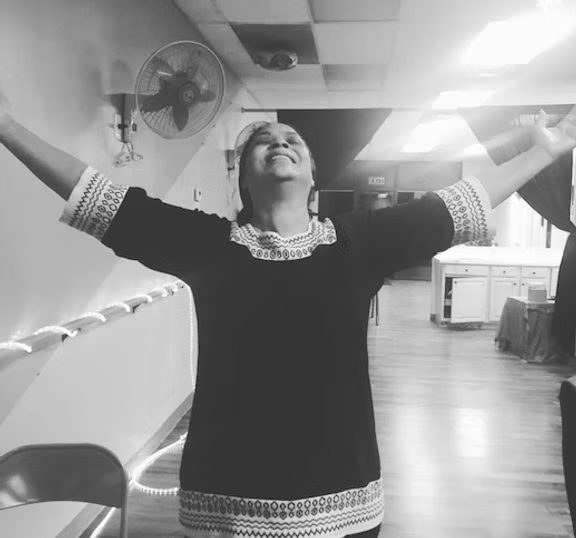
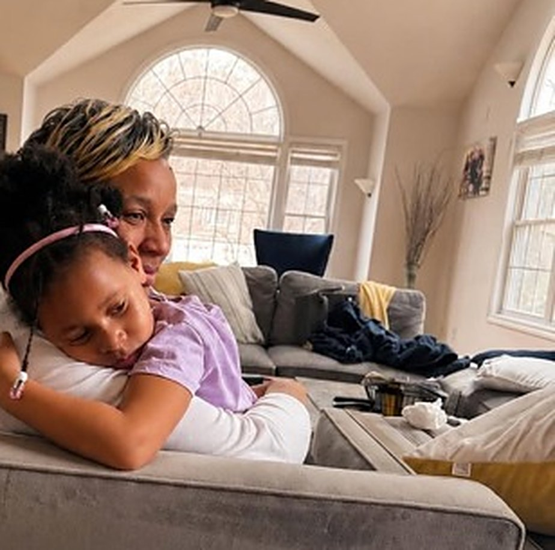

There Is a Place for You
Worship with us on Sunday, grow with us on Wednesday, and serve with us all month long.
Sunday Service
Join us for worship, prayer and a Bible-based message. Come as you are. All are welcomed, and we’re not just church, we’re family.
- When: Sundays at 11:00 AM
- Where: 200 North Cary Street, Brockton, MA 02302
- Online: Watch live on Facebook
- Kids: Hosanna Kids holds its own Sunday kids service
- Monthly: Service Sunday, when we serve our community together
- Family First Sundays: No in-church service. Learn why


Family First Sundays
On Family First Sundays there is no in-church service. Our families are the first ministry God has given us, so we set this day aside for our members to rest, worship together at home and spend real time with the people they love.
“But as for me and my house, we will serve the LORD.”Joshua 24:15 (KJV)
- Pray together: Start the day with prayer and Scripture at home
- Share a meal: Talk about what God is doing in each other’s lives
- Worship at home: Catch up on a recent message from our pastors
- Rest and enjoy: Play, laugh and be present with your family

Bible Study
Our weekly Bible study is a safe and supportive place where members connect with one another, study the Bible in depth, ask hard questions and grow in understanding.
- When: Wednesdays at 7:30 PM
- Where: Online on Zoom
- Who: Everyone. No experience needed
Other Gatherings
SUN
Monthly Service Sunday
Serve our neighbors together. We also sponsor local giveback events.